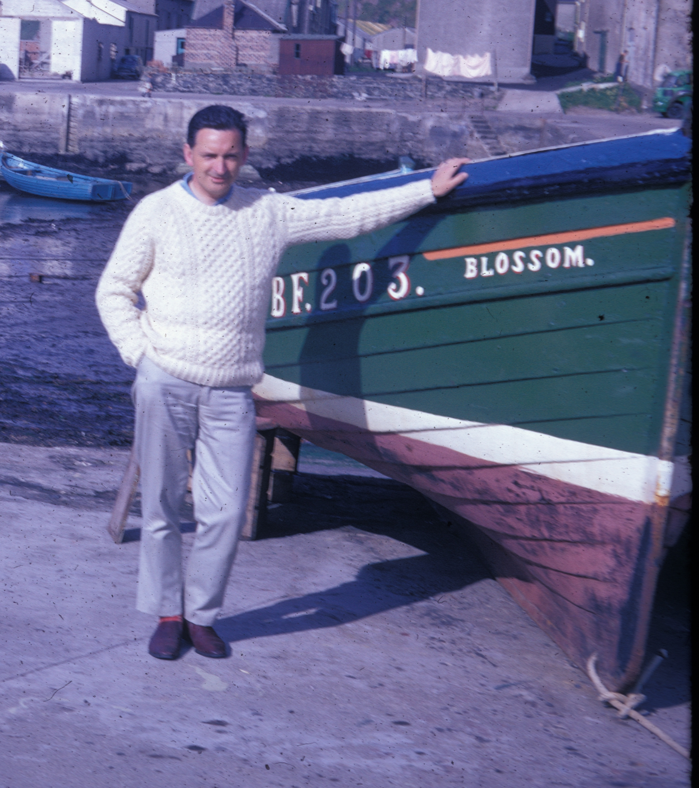

Ramsay George Small was born on the 5th of February 1930, in Calcutta, the third of the four children of Robert and Anne Small.
His father a jute mill manager remained in India with his wife throughout the 1930s, although Ramsay came home at the tender age of 2, to be looked after by his grandmother, a woman who was to have a profound influence on his upbringing and values.
He was educated at Rosebank School, then Harris Academy, and his academic ability allowed him to go on to study medicine at Queens College Dundee, then part of St Andrews University.
As a young man, at school and then university, he had also committed himself to the three other things, which, together with medicine, would make up the 4 cornerstones of what, no-one can deny, was a fulfilled life: his Christian faith, his family, and his love of music.
Brought up in a Christian home, he had become a Christian himself, and was baptised in Rattray Street Baptist Church in 1945. He would go on to become church organist and choirmaster there. Through his involvement with the vibrant young evangelical community in Dundee at the time, he met, and later fell for Aileen Masterton. They married in 1952, when Ramsay was still a student, and set up home together.
In 1954, he graduated and began work, at Stracathro Hospital, and Maryfield Dundee. Ronald was born that year, with Douglas following in 1955. Where they found time for family life when he was working the sort of hours junior doctors had to work in the 1950s is a mystery to me, and national service in the RAMC must have come as something of a relief.
If you go to the village museum in Crail, you can find an old black and white photograph of the foreign language school, mid1950s, and hiding in the corner is a character who looks suspiciously like Adolf Hitler on the run.
This is my father, providing medical care to would be spies learning Russian in the East Neuk of Fife.

RAMC
zoom - ramsay far right

This is the former Royal Naval Air Station, HMS Jackdaw at Crail which became the Joint Services School for Linguists (JSSL).
Prominent JSSL alumni include author Michael Frayne, actor Alan Bennett, and documentary filmmaker Leslie Woodhead.


By 1958, Kenneth had arrived, and the family moved to Ayrshire, as by then Ramsay had completed his Diploma in Public Health and decided to pursue a career in that specialty. He returned to Dundee in 1961, now with four boys, to take up the post under the Medical Officer of Health of the city, Ian Weir, eventually becoming a principal medical officer there, a position he held until 1974. 1961 also saw the beginning of his 42 year relationship with 46 Monifieth Road, and with Broughty Ferry Baptist Church.
Broughty Ferry Baptist Church
At the time a tiny fellowship, struggling to survive, my mother tells of an evening when my father turned up for a midweek prayer meeting to find only he and Wyn Christie there. Downhearted, and close to giving up, my father listened to Wyn's earnest prayers for the growth of the church, and they carried on. I think they agreed not to close the meeting with a hymn that evening.
I remember Sunday evenings, the four of us dressed in our kilts, when the Small family made up half the congregation. Fortified with fruit gums from Betty Kinloch, we would sit under the watching eyes of our parents. I well remember Douglas' s disgust at being denied the chance to watch the 1970 World Cup final, because it was on a Sunday evening and we had to go to church.
His faithfulness in the small things of the Christian life were always as important to him as were the grander schemes of church life. He was a good listener, a comforter, a man of wise council, as well as a preacher and teacher of the word of God.
By the 1970s, Ramsay had become involved with the Baptist Union of Scotland at a national level, and became its President in 1972. By then he was also Secretary in Broughty Ferry, and was preparing for a change of direction in his career, brought on by health service re-organisaiton in 1974. That Presidential year, I was too wee to be left at home, and my mother and I must have heard him preach sermons in about 20 churches throughout the length and breadth of Scotland. It must have been tempting just to use the same one every week; not my father.
And still he found time to preach in Broughty Ferry every month, write the magazine, take his turn on the organ rota, and take us to exotic, far away places for our holidays. Strontian, Wester Ross, Skye, Inverary rain and midgies.